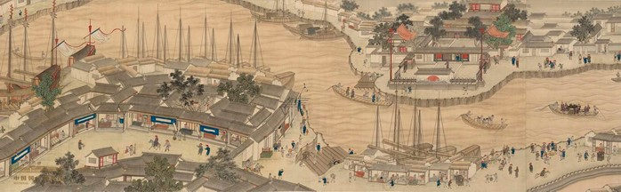
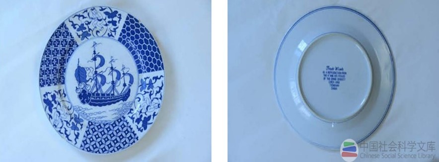

康熙开禁后，中国商船纷纷驶往长崎港，且逐年增多，到1688年高达193艘。对此，日本政府不胜负担，进行种种限制。 同时，褙政府也对赴日办铜商船严加各种控制。这样，中国驶日商船便急制减少，到1742年减至12艘。在此期间，江浙商品经济的发展，普陀山成为中国商船驶往长崎前的主要集泊场所。
在对南洋航海贸易方面，自开禁复弥后，厦门、广州等地的“富商大估（贾），挟奇赢兴贩四方”，“重洋绝岛。”尤里无阻。 但随着南洋航运的增加，清政府故态复萌，唯恐东南沿海人民在海外积聚力量进行颠裰活动、于是，从康熙五十六年(1717年)起，义下令“其南洋吕米、 噶喇吧等处，不许前往贸易”。这样，南洋航业义遭重大打击，“万货不通，民生口蹩”，“居者苦艺能之罔刑，行者叹至远之无方，故以叫、五千金所造之洋艘， 系维朽蠹于断港荒岸之间”。在闽、粤沿海“不敷食用”的经济压力下，雍正五年(1727年)义复开海禁，中国对东南亚的航业渐臻活跃，据此粗略统计，在清代远洋盛期， 活动在东南亚水域的各类中国海船约有500艘左右，至少拥有近20万吨的运输能力。
潞河督运图 江萱 清乾隆
进入19世纪，中国对南洋的航运态势，发生了深刻的时代变化。一方面，由于清朝限制海外贸易的苛令陋规有增无减，使“洋船失利”， 削弱了在海外市场的竞争能力：另方，出西方资本主义列强对南洋的航运垄断，使中国木帆船被排挤出传统的国外市场， 中国海商也开始降为荷、英、美等国航运公司的中介人与附庸。到道光元年(1821年)，由中国远洋航业中心之一厦门发往南洋的正式商船数， 已只有可怜的10余艘了。而这一时期在东南亚活动的中国商船，一般只有300艘左右，运力约8万吨。与上一个世纪的盛期相比，已呈明显的颓势。
在中国远祥航业走向衰落的同时，西方列强的远洋航业却急剧膨胀。且不谈它们在全球范围内的扩张，即以其对华航业之一隅而论，便可看出咄咄逼人的态势。 据《粤海关志》所载，在18世纪中叶，每年来华的外国商船不过数艘至20余艘而已，其载运量也只有一二万吨。但到19世纪20年代，进人广州的外国商船已达100余艘，6万余载重吨。 而到鸦片战争前夕，西方各国抵华商船已达数百艘，总运载力超过8万余吨，达到了可与中国帆船相匹的水平。
现代青花康熙朝开禁通海图盘，步云楼藏
中西远洋航业的此消彼长，充分展示了资本主义较之封建主义在发展社会生产力方面的历史进步性。 诚如马克思与恩格斯所深刻指出的那样：“资产阶级，由于开拓了世界市场，使一切国家的生产和消费都成为世界性的了。 不管反动派怎样惋惜，资产阶级还是挖掉了工业脚下的民族基础。古老的民族工业被消灭了，并且每天都还在被消灭。”清代的远洋航业虽曾一度称雄于东南亚， 但是，那种由封建主义自然经济所决定的封建专制主义的航海政策，注定了中国古老的木帆船航业必将无可挽回地走向衰败。